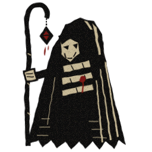
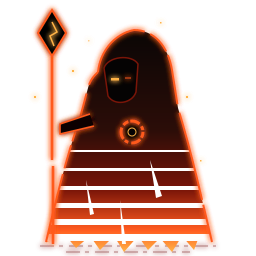
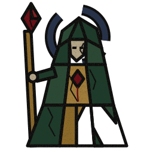
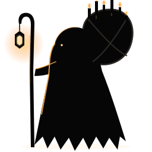
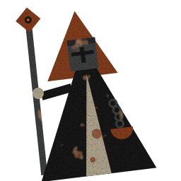
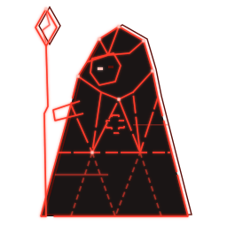
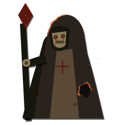

01 · Ash Woodcut
Plague pamphlet, gaunt and self-bandaged
- Ink, dirty bone, old blood. Nothing else.
- Faces are gaunt: triangle eye sockets and slashed cheeks.
- The healer carries a crook with a hanging censer. Their bandages are on their own body.

02 · Ember Wraith
The synthwave sun, burnt out
- The sun gradient only burns at the bottom, with tears cut through it.
- Neon outlines have gaps, like a failing sign.
- A darksign ring on the chest. Embers drift upward.

03 · Shattered Cathedral
A ruined saint's window
- Murky, tarnished glass. Every character is missing 1–2 panes.
- Crack lines in the lead colour. The halo is broken into chunks.
- Pallid faces with rectangular hollow eyes.

04 · Hollow Pilgrim
Bent under a burden of candles
- Black silhouettes in grey fog. Each class has a burden on its back: candles, a coffin, a bell, a broken wheel.
- The only light is one small warm flame.
- Rim light only where that flame reaches. One dim eye.
05 · Tarnished Icon
Maiden in black
- Dull, tarnished gold lines, with chips where the gilt has flaked off.
- No faces. Veils, with blood tears running down them.
- Each character holds one sacred object (here a candle), and it's the only thing that glows.

06 · Hollow Iron
Bauhaus geometry, rusted shut
- Still only circles, triangles and rectangles. Now everything leans, as if under weight.
- Great helms with cross slits instead of faces. Chains are rows of rings.
- A rust-noise pass and heavy grain go on last. One ember dot per character.

07 · Hollow Signal
A vector display going hollow
- Red phosphor, with a burnt-in ghost copy offset behind it.
- Lines drop out. One eye is lit, the other is dead.
- Damage could literally erase lines from the mesh.

08 · Grave Doll
Burnt paper, rusty nails
- Charred paper scraps, some with smouldering edges.
- Rusty nails hold things in place, including the eyes, which weep rust.
- Burn holes and dark-red stitches. The healer is the one holding the party together with thread.